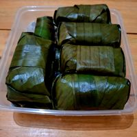
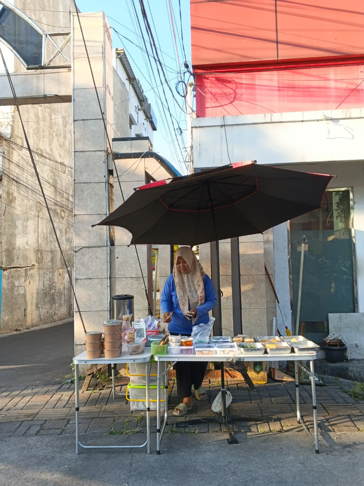

🥇 PRODUK UNGGULAN UTAMA

Arem-Arem Mie
Menu paling ikonik yang paling cepat habis setiap pagi. Kombinasi mi gurih padat dengan isian bumbu spesial yang pas untuk mengganjal lapar pagi Anda tanpa ribet.
Rp3.500

Solusi energi pagi untuk para pekerja, orang tua murid, mahasiswa, hingga pegawai rumah sakit di sekitar Jebres. Menghadirkan beragam gorengan, kue basah, hingga makanan berat racikan Bu Tutik sejak Oktober 2025.

Terletak tepat di depan PMI Surakarta. Sangat mudah dijangkau di pinggir jalan bagi yang sedang berangkat kerja atau mengantar anak sekolah.
Sudah siap melayani Anda mulai pukul 05.30 pagi saat jalanan Solo masih sejuk, pas untuk bekal anak maupun sarapan instan sebelum absen kantor.
Mulai dari jajanan serba Rp2.500 hingga menu mengenyangkan seperti Chicken Katsu, semuanya bersahabat dengan kantong mahasiswa dan pegawai.

Menu paling ikonik yang paling cepat habis setiap pagi. Kombinasi mi gurih padat dengan isian bumbu spesial yang pas untuk mengganjal lapar pagi Anda tanpa ribet.
"Tiap subuh habis ngantar anak sekolah di sekitar Jebres pasti mampir kesini buat nyari Arem-Arem Mie-nya. Kalau kesiangan dikit jam 8 sering banget udah ludes. Andalanku banget!"
"Penyelamat kantong mahasiswa sebelum kelas pagi! Harga jajanannya murah, arem-aremnya padat bikin kenyang, dan lokasinya pas banget di pinggir jalan searah kampus."
"Kerja di area medis/kantor sekitar PMI bikin jam sarapan sering mepet. Untung ada lapak Bu Tutik yang buka dari jam setengah 6 pagi, Chicken Katsu-nya rekomen buat bekal siang."
| Kanal Digital | Status Awal | Rencana Aksi Kelompok Mahasiswa |
|---|---|---|
| Google Maps | ❌ Belum Ada | Pembaruan pin akurat & optimasi deskripsi kata kunci "Tenongan Jebres" |
| Instagram & FB | ❌ Belum Ada | Pembuatan akun official baru & strategi visualisasi produk |
| WhatsApp Business | ❌ Belum Ada | Migrasi ke WA Business, setting katalog harga otomatis, & pesan sambutan |
| Landing Page / Profil | ❌ Belum Ada | Pembuatan website profil sederhana / kalkulator pesanan interaktif ini |
Gunakan sistem simulator ini untuk membantu menghitung total biaya pesanan pelanggan secara instan.